<!DOCTYPE HTML PUBLIC "-//W3C//DTD HTML 4.01 Transitional//EN" "http://www.w3.org/TR/html4/loose.dtd">

<html lang="Ja">
<head>
	<meta http-equiv="content-type" content="text/html; charset=UTF-8"/>
	<title>Art of BeOS Programming</title>
	<link href="../css/format.css" rel="stylesheet" type="text/css">
	<link href="../css/layout.css" rel="stylesheet" type="text/css">
</head>

<body>

<div id="pagewidth">

<div id="main">

<br/>

<h1>第2章 BeOSのアーキテクチャとAPI</h1>
<br/>

前章では、BeOSの歴史と特徴、そしてインストール方法を説明しました。次にBeOSの内部構造と、プログラムを書くために理解すべきAPI(Application Programming Interface)の解説を行います。<br/>

<br/>

<br/>
<a name="2.1"></a>
<h2>2.1&nbsp;&nbsp;内部構造の概観</h2>
BeOSの大まかな内部構成を下図に示します。<br/>

<br/>

<div id="imagebox">
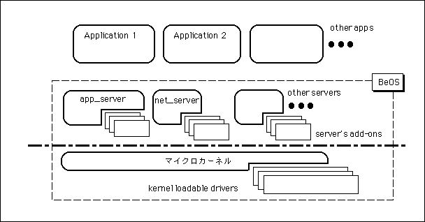<div>図[2.1] BeOSの内部構成図</div>
</div>

<br/>

この図は、Be社からの断片的な情報をもとに筆者が独自に作成したものであるため、Be社が公開している資料にあるもの(<<a href="http://www.be.com/developers/whybedev/index.html" target="_blank">http://www.be.com/developers/whybedev/index.html</a>>)とは若干内容が異なります。Be社が公開している図は、古いバージョンのBeOSに基づいているので独自に作成しました。実際の構造とは異なっている可能性もありますが、一つのモデル図であると理解して下さい。<br/>

<br/>

図のうち、マイクロカーネルは名前の通りBeOSの中核であり、一つの実行ファイルとしてディスクに格納されています。BeOSではサポートするマシンの種類、すなわちハードウェアのアーキテクチャごとにマイクロカーネルのファイルを用意しており、“kernel_joe”(注2-1)や“kernel_mac”、それから“kernel_intel”と、それぞれ異なった名前が付けられています。ファイルの大きさは720KB程度と、比較的小さなものです。NEXTSTEPのMachカーネルのファイルサイズが約2MBですから、どの程度小さいかが想像できるでしょう。ちなみに、PowerMac用のMkLinuxの場合ですと、Machカーネルのファイルサイズが約1MB、Linuxサーバ(vmlinux)のファイルサイズが1.5MB弱です。<br/>

<br/>

プロセスや仮想記憶の管理機構、またプロセス間通信機構など、OSの中核をなす機能はマイクロカーネルの中に実装されていますが、ユーザ入力及びグラフィクスの処理、またネットワーク処理などを行うモジュールはカーネルから分離されています。これらのモジュールは、カーネルとは独立した別プロセス(サーバモジュール)として動作します。図でいえば、ユーザ入力とグラフィクス処理を扱うのがapp_server、そしてネットワーク処理を行うのがnet_serverです。このように、最低限必要なもの以外の機能をOSの中核部分、すなわちカーネルから抜き出し、別プロセスとして動作させるのがマイクロカーネルの特徴です。そうすることで、カーネルのファイルサイズが小さくなり、OS全体の移植や保守が簡単になります。これが「マイクロカーネル」と呼ばれる所以なのです。一方、OSが持つ全ての機能を一つのファイルに押し込んだ形のOSは、モノリシックカーネルと呼ばれます。図2.2は、モノリシックカーネルとマイクロカーネルとの違いを示したものです。<br/>

<br/>

<div id="imagebox">
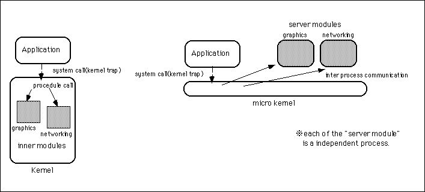<div>図[2.2]  モノリシックカーネルとマイクロカーネルの比較図</div>
</div>

<br/>

モノリシックカーネルは、従来から一般的に使われてきたOSの構成法です。各種のUnix系OSや、それからIBM社のOS/2などは、すべてモノリシックカーネルを用いています。実は、マイクロカーネルを指向したOSは、Machを始めとして研究分野や特殊用途の分野には古くからありました。WindowsNTが採用したことで、一般向けOSの分野でもマイクロカーネルが注目されるようになったのです。しかし、1.2で述べたように、それには克服すべき欠点がありました。マイクロカーネルとサーバモジュールは互いに独立したプロセスに分離されているために、アプリケーションがOSの機能を呼び出す場合、必ずアプリケーションとサーバモジュールの間にプロセス間通信が発生します。それが余分なオーバーヘッドとなって、パフォーマンスの低下を招くのです。これに対し、モノリシックカーネルの場合は全ての機能がカーネルの中にあるので、プロセス間通信を行う必要がなく、それだけパフォーマンス面で有利です(注2-2)。<br/>

<br/>

BeOSでは、マイクロカーネルの欠点を克服するために三つの対策をとっています。まず、パフォーマンスが特に重要なモジュールとして、ファイルシステムのハンドラをマイクロカーネルの部品にしています。これはWndowsNTも同様です。それから、2.3節で述べるようにグラフィクスモジュール(app_server)を高機能なものにして、アプリケーションとの間の通信量を抑える工夫をしています。次に、マイクロカーネルからOSの機能を抜き出した際、それを複数のサーバモジュールに分割し、それぞれが独立したプロセスとして動作できるようにしています。OSの機能を複数のサーバモジュールに分割することによってOS自体の並列度が増し、それによる高速化の効果がプロセス間通信のオーバーヘッドを打ち消してくれるのです。これは、複数のサーバモジュールがそれぞれ並行動作できるということだけが理由ではありません。アプリケーションがOSの機能を呼び出す際に、アプリケーションとサーバモジュールを結ぶ通信チャネルが、サーバモジュールの数だけ存在できるからです。<br/>

<br/>

複数のサーバモジュールを使って構成されているBeOSに対し、WindowsNTやMkLinuxでは、マイクロカーネルから抜き出したOSの機能が単一のサーバモジュールに押し込められています。両者の違いを考えるために、二つのアプリケーションが、それぞれ描画処理とネットワークの処理を行っている状況を頭に浮かべて下さい。BeOSでは、描画処理を行うアプリケーションは描画処理用のサーバモジュール(app_server)と通信しますし、ネットワークの処理を行うアプリケーションは、ネットワーク処理用のサーバモジュール(net_server)と通信します。つまり、二つのアプリケーションとサーバモジュール間の通信は、それぞれ独立しているのです。一方、サーバモジュールが一つしかないOSでは、二つのアプリケーションは同一のサーバモジュールと通信するので、サーバモジュールとのプロセス間通信がボトルネックになってしまいます。マイクロカーネル構成のOSで、アプリケーションとサーバモジュール間のプロセス間通信がオーバーヘッドを生むのは、プロセス間通信そのものが問題なのではなく、このボトルネックこそが問題なのだと考えられます。実際に、それを裏付ける研究結果もあるようです[4]。<br/>

<br/>

さて、上の説明で、BeOSではファイルシステムのハンドラをマイクロカーネルの部品にしていると述べました。部品といってもマイクロカーネル本体に最初から埋め込まれているのではなく、追加や削除を自由に行える、柔軟性の高い独立した部品です。つまり、個々のハードウェアを制御する「デバイスドライバ」だけではなく、ファイルシステムも部品として追加したり削除することが可能です。WindowsNTでも同様ですが、これにより、色々な種類のファイルシステムをサポートするのが簡単になっています。<br/>

<br/>

このような、付け外し可能な部品を利用するのはマイクロカーネルだけではありません。各種サーバモジュールも、同じように付け外し可能な部品を利用しています。グラフィクス処理を行うapp_serverは、ビデオカードのドライバを部品として組み込みますし、ネットワーク処理を行うnet_serverでは、ネットワークプロトコルのドライバが部品化されています。この章の残りで詳しく説明していきますが、これらの部品を扱う仕組は、実はマイクロカーネルとサーバモジュールの両方に共通したものが使われています。さらに、同じ仕組がアプリケーションでも利用できるのです。複数のネットワークプロトコルやファイルシステムをサポートするために、最近のOSでは多かれ少なかれこのような「プラグイン・アーキテクチャ」を取り入れていますが、BeOSのように、OS内部からアプリケーションに至るまで全てが一貫した仕組で部品化されているのは、研究レベルのものを除けば非常に珍しいと思います。<br/>

<br/>

<span id="annotate"><dl><dt>(注)2-1</dt><dd>“kernel_joe”はBeBox用のマイクロカーネルです。おそらく、BeBoxを設計した、元Be社のハードウェア・チーフエンジニアであるJoseph Palmarに敬意を表して名前をつけているのでしょう。</dd></dl></span>
<br/>

<span id="annotate"><dl><dt>(注)2-2</dt><dd>2.3節の説明で述べるように、アプリケーションがカーネルを呼び出す場合は、プロセス間通信は起きません。その場合は、「システムコール」と呼ばれる特殊な手順が使われます。</dd></dl></span>
<br/>

<br/>
<a name="2.2"></a>
<h2>2.2&nbsp;&nbsp;BeOSのシステム構成</h2>
BeOSがどのような構成になっているかを別の角度から眺めるために、システムディレクトリの内容を見てみましょう。システムディレクトリの階層を下図に示します。<br/>

<br/>

<div id="imagebox">
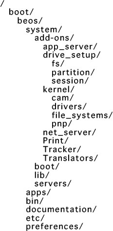<div>図[2.3] システムディレクトリの階層図; 以下のような内容</div>
</div>

<br/>

図2.3に示したシステムディレクトリのうち、主なものについて以下に説明します。なお、図ではディレクトリ名の後ろに'/'を付けていますが、説明の方では最後の'/'を省き、ルートディレクトリからのパスを使って書いていますので注意して下さい。<br/>

<br/>

 ・/boot<br/>

  起動ボリューム(パーティション)の先頭ディレクトリ。/bootは起動ボリュームのマウントポイントとして予め決められているもので、これを変更することはできません。なお、/bootは特別なディレクトリという位置付けなので、デスクトップ画面(Tracker)には表示されません。その代わりに、ルートディレクトリ(/)に作られた起動ボリュームと同じ名前のシンボリックリンク(MacOSのエイリアスに相当)が表示されます(注2-3)。<br/>

<br/>

 ・/boot/beos/system/add-ons<br/>

  マイクロカーネルやサーバモジュール、またシステム付属のアプリケーションが利用する“add-on”を格納するディレクトリ。内部はサブディレクトリを使って分類されています。add-onについては2.5節で詳しく説明しますが、任意のタイミングでロードやアンロードできる動的リンクライブラリのことです。2.1節で述べた「付け外し可能な部品」というのは、このadd-onを指しています。<br/>

<br/>

 ・/boot/beos/system/lib<br/>

  アプリケーションやサーバモジュールが利用する、共有ライブラリを格納したディレクトリ。2.6節で述べるAPIの実体は、各種サーバモジュールやマイクロカーネルの中に実装されているのですが、それを呼び出すためのライブラリを収めたものです。2.6節で述べるように、BeOSのAPIは“Kit”と呼ばれる集まりに分類されていますが、それぞれのKitにごとに対応する共有ライブラリがあります。<br/>

<br/>

 ・/boot/beos/system/servers<br/>

  2.1で図示したapp_serverやnet_serverなど、サーバモジュールを格納したディレクトリ。アプリケーションがAPIとしてリンクするのは/boot/beos/system/libに置かれた共有ライブラリですが、ライブラリ内部では、サーバモジュールやマイクロカーネルを呼び出して必要な処理を実行します。なお、マイクロカーネルが置かれているのはこのディレクトリではなく、/boot/beos/systemです。<br/>

<br/>

マイクロカーネルとサーバモジュール、それからアプリケーションの相互関係を分かりやすくするために、図にしてみました。<br/>

<br/>

<div id="imagebox">
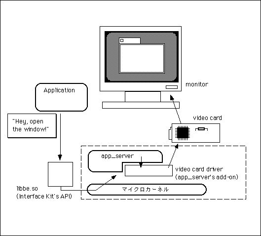<div>図[2.4] app_serverを使ったモジュールの呼び出し関係を図示</div>
</div>

<br/>

上の図は、アプリケーションがウィンドウを表示する場合の処理の流れを示したものです。「ウィンドウを作れ」というアプリケーションの命令は、システムが提供する共有ライブラリを通じてapp_serverに伝えられます。アプリケーションとapp_serverとの通信は、マイクロカーネルが提供するプロセス間通信機構を使って実行され、app_serverはハードウェア(ビデオカード)を呼び出して画面にウィンドウを表示します。<br/>

<br/>

また、キーボードやマウスからの入力はデバイスドライバを通じてマイクロカーネルに伝えられ、app_serverがそれを検出してアプリケーションに通知します。このようにして、システム全体が奇麗にモジュール化されて動作するのです。ここで重要なのは、サーバモジュールとアプリケーション、それからマイクロカーネルがそれぞれ独立したプロセスとして動作するということです。すなわち、それぞれが別のプロセスとして固有のアドレス空間を持っているため、どれか一つに障害が起きても全体がダウンしてしまうことが起こりにくいという点です。もちろん、マイクロカーネルはメモリ管理やプロセスの実行制御などOSの基本機能を提供する特別なプロセスですから、マイクロカーネルに障害が起きた場合は、システム全体がダウンしてしまいます。大事なのは、アプリケーションやサーバモジュールのどれかに障害が起きても、それがマイクロカーネルを含めた他のプロセスに及ばないということです。<br/>

<br/>

例えば、ネットワーク処理を行うnet_serverに障害が起きても、ネットワーク通信機能を利用できなくなるだけで、それ以外の部分は問題なく動き続けることができます。また、net_serverを強制終了して起動し直せば、何事もなかったかのようにネットワーク通信を再開できるのです。これが、1.2節でマイクロカーネルを使ったOSではシステムの堅牢性が高くなると述べた理由です。<br/>

<br/>

さて、アプリケーションがサーバモジュールを呼び出す時は、プロセス間通信を使って処理を依頼すると述べました。それでは、マイクロカーネルの呼び出しはどうなのでしょう?これについて少し説明します。アプリケーションからマイクロカーネルを呼び出すには、CPUに用意されている特殊な命令によってソフトウェア割り込みを発生させ、マイクロカーネルに制御を移します。マイクロカーネルは、あらかじめ決まっている場所(レジスタ)に置かれたデータを見て行うべきサービス処理を判断し、実行します。サービス処理の実行が終わったら、マイクロカーネルはアプリケーションに制御を戻し、実行を再開させます。この手順は、一般に「システムコール」と呼ばれます。<br/>

<br/>

このように、マイクロカーネルの呼び出し手順はサーバモジュールの呼び出し手順とは違いますし、またライブラリ手続きの呼び出し手順とも違っています。マイクロカーネルとアプリケーションとではCPUの動作モードが異なっているため、呼び出しを行うには動作モードの切り替えが必要になるからです。一般に、CPUは二通りの動作モードを備えており、実行できる命令が制限された「ユーザモード」と、全ての命令が実行可能な「特権モード(スーパバイザモード)」を切り替えながら動作することができます。マイクロカーネルが特権モードで実行されるのに対し、アプリケーションや、またサーバモジュールはユーザモードで実行され、マイクロカーネルの管理下に置かれます。こうすることで、アプリケーションやサーバモジュールが誤って不正な処理を行っても、システム全体がクラッシュしてしまうのを防ぐことができるのです。<br/>

<br/>

OSとアプリケーションでCPUの動作モードを切り替えることによってシステムの堅牢性を高めるというのは、Unix系のOSで伝統的に使われてきましたが、OS/2やWindowsNTなどパソコン向けのOSでも一般的になってきました。Windows3.xやMacOSなど従来のパソコン向けOSと比較すると、これらのOSはハングアップしてしまうことが少ないと言われますが、それにはこのような理由があるのです。そして、その考え方はBeOSでも踏襲されているというわけです。<br/>

<br/>

なお、マイクロカーネルの呼び出しは、実際にはサービス処理ごとに用意されたライブラリ手続きの中で行われるため、アプリケーション側で直接プログラミングする必要はありません。2.6で紹介するBeOSのAPIは、内部で必要に応じてマイクロカーネルを呼び出しますが、アプリケーション側ではその詳細を意識しなくて済むようになっているのです。OSの内部構造についてより深く知りたい人は、章末に挙げた参考文献を読んでみるのがよいでしょう(注2-4)。<br/>

<br/>

<span id="annotate"><dl><dt>(注)2-3</dt><dd>Unix系のOSと同様、BeOSでもmountコマンドを使って任意の位置にボリュームをマウントすることができます。しかし、Tracker(MacOSのFinderやWindowsのエクスプローラに相当)ではマウントした位置とルートディレクトリの直下にボリュームのアイコンが表示され、ルートディレクトリにあるボリュームに対してマウントポイントからシンボリックリンクを設定したかのように扱われます。これは、デスクトップからは全てのボリュームが同じ場所にまとまって置かれるようにしてユーザに分かりやすくする一方、Unixに馴染んだ人に対しても便利であるようにした折衷案なのだと思います。</dd></dl></span>
<br/>

<span id="annotate"><dl><dt>(注)2-4</dt><dd>たとえば、章末の参考文献に挙げた『OSの基礎と応用』[4]はOSの基礎を学ぶのに良い解説書です。</dd></dl></span>
<br/>

<br/>
<a name="2.3"></a>
<h2>2.3&nbsp;&nbsp;サーバモジュール</h2>
ここでは、実際にどのようなサーバモジュールが動いているのかを見ておきましょう。なお、プログラミングをする場合に直接関係するのは2.6節で紹介するAPIであり、どのようなサーバモジュールがあるかを意識しないで済むようになっています。しかし、APIを知るだけではなく、その「裏側」、つまりシステムの内部がどのように動いているのかを知っておくことも重要です。その理解を通して、自分の書いたプログラムがAPIを通じてどのようにOS内部のモジュールを駆動し、そして実行されるのかというイメージをつかめるようになれれば理想的です。そうすれば、プログラムが期待した通りに動かなかったり、また不可解なエラーを起こしても、その原因を探る手がかりを得るのがそれほど難しいことではなくなります。<br/>

<br/>

以下に、/boot/beos/systems/serversに置かれたサーバモジュールのファイル名と、その役割を順に述べます。<br/>

<br/>

 ・app_server<br/>

  2.1で述べたように、主にユーザ入力とグラフィクス処理を扱うモジュールです。サーバモジュールの中では最もファイルサイズが大きく、BeOSのアプリケーションを動かすための中心的な存在です。MacOSでいえばQuickDrawやイベントマネージャ、それからウィンドウマネージャなど、Toolboxの基本機能をまとめたもの、WindowsでいえばGDIとウィンドウマネージャに相当します。X Window Systemですと、X Serverとウィンドウマネージャを合わせたものだと考えて下さい。<br/>

<br/>

  ただし、app_serverには他のシステムのものと比べて際立った特徴があります。app_serverは単なる描画エンジンやウィンドウシステムではなく、BeOSアプリケーションの実行を、かなり高いレベルで支援するのです。アプリケーションからの要求に従ってウィンドウを一枚開くと、app_serverはそのウィンドウに対する鏡像、すなわちウィンドウの「ミラーオブジェクト」を内部に生成します。app_serverは、このミラーオブジェクトをウィンドウが閉じられるまで管理し、ウィンドウに対するユーザの操作をすべて自分で処理します。つまり、ウィンドウの移動やリサイズに関わる描画処理はapp_serverが行うのです。さらに、ボタンやスクロールバーなどのビュー部品に対してもミラーオブジェクトを持ち、これらのビュー部品に関してユーザが行う操作についても、app_server側で行える描画処理は全て自分で済ませてしまいます。このようにすることで、アプリケーションとの間で起こるプロセス間通信の量をできるだけ抑え、それによって効率化を図っているのです。<br/>

<br/>

<div id="imagebox">
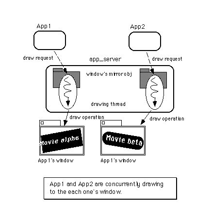<div>図[2.5]  複数のウィンドウに対する並列描画</div>
</div>

<br/>

また、app_server内部は高度にマルチスレッド化されており、アプリケーションがウィンドウを一枚開くと、それに応じてapp_server内にスレッドが一つ生成されます。このスレッドはアプリケーションからの描画命令を受け取って処理するためのもので、ウィンドウ一枚につき一つの描画処理スレッドが動きます。そして、アプリケーションがapp_serverに描画命令を送るときは、この描画処理スレッドと直接通信できるのです。つまり、直接ウィンドウにあてて描画命令が送られるため、描画命令が一旦app_server内の一箇所に集められ、その後で関連するウィンドウに割り振られる場合と違い、ボトルネックが生じません。この様子を図2.5に示します。<br/>

<br/>

2.1で、OSの機能を複数のサーバモジュールに分割することによって並列度が増し、その結果アプリケーションとサーバモジュールとのプロセス間通信のオーバーヘッドを打ち消せると説明しました。図2.5は、それと良く似た状況を示しています。WindowsNTでは、描画モジュールをマイクロカーネルに取り込んでしまうことで動作効率の向上を図りました。しかし、マイクロカーネルに取り込むモジュールを増やすということは、それだけ堅牢性を損ねるということなのです。それと比べると、BeOSがとっているやり方は安全で、かつマルチプロセッサ機による並列処理を活かせるものです。<br/>

<br/>

 ・audio_server<br/>

  オーディオデータのリアルタイム処理機能を提供するモジュールです。2.6で紹介するAPIのうち、Media Kitはこのサーバモジュールを呼び出してサウンド処理を行っています。なお、1998年9月リリース予定のBeOS Release 4ではaudio_serverが廃棄され、代わりに“media_server”という新しいサーバモジュールが導入される予定です。media_serverは、オーディオデータだけではなく、ビデオやMIDIなど任意のデータのストリームを扱う能力を持ちます。さらに、複数のデータストリームの間でタイミング付けを行い、同期をとる仕組も提供される予定です。media_serverが導入されれば、Apple社のQuickTime APIに匹敵するか、もしくはそれを凌駕するものになるでしょう。<br/>

<br/>

  audio_serverでは、ADCからDACへ流れるサウンドチャネル、つまりオーディオデータのストリームをシステム内で大域的に扱い、複数のアプリケーションがストリーム処理に参加して連携することを可能にしています。新たに導入されるmedia_serverでもこの機能は受け継がれ、オーディオ以外のデータストリームに対しても同様の機能が提供される予定です。<br/>

<br/>

 ・debug_server<br/>

  デバッグ機能を提供するモジュールです。BeOS標準の低レベルデバッガと連携し、アセンブラでのデバッグを可能にします。不正なメモリアクセスやゼロ除算によってアプリケーションが実行時エラーを起こした場合、BeOSではシステム付属の低レベルデバッガ(/bin/db)を起動します。図2.6に、アプリケーションが不正なメモリアクセスを行ってエラーを起こしたときに、デバッガが起動するまでのステップを示します。<br/>

<br/>

<div id="imagebox">
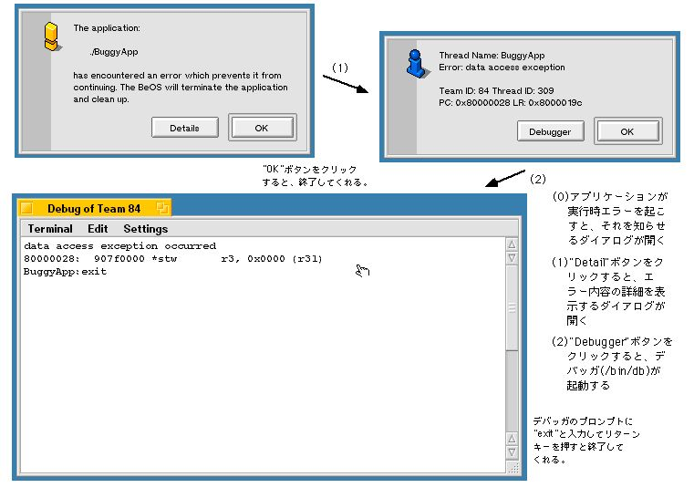<div>図[2.6]  エラーの発生から/bin/dbの起動まで</div>
</div>

<br/>

この低レベルデバッガのマニュアルは特に用意されていませんが、デバッガのプロンプトに対して"help"と入力すると、コマンドの一覧を表示してくれます。ブレークポイントの設定やステップ実行など基本的なコマンドに加え、レジスタの値を表示したり、またデバッグ対象になっているプロセスおよびスレッドの情報を見ることも可能です。さらに、アプリケーションのコンパイル時にシンボルファイルを作成しておくと、ブレークポイントを設定する際にメソッドや関数名で指定することができます。通常、アプリケーションのデバッグ作業にはMetrowerks社製のソースレベルデバッガ(MWDebug)を利用するため、低レベルデバッガの使い方については、本書では特に説明しません。MWDebugの操作方法は、第4章で説明します(注2-5)。<br/>

<br/>

なお、アプリケーションがエラーを起こした際に、図2.6に示すダイアログを表示しないで、直ちにデバッガが起動するように設定することも可能です。そのように設定するには、/boot/home/config/UserSetupEnvironmentというテキストファイルに次の一行<br/>

<br/>

 export DEBUG=true<br/>

<br/>

を書いて下さい。BeOSをインストールした直後には、/boot/home/configには“UserSetupEnvironment.sample”というテンプレートファイルが置かれています。このファイルをコピーして“UserSetupEnvironment”という名前のファイルを作って使うと便利です。テンプレートファイルでは上に示した行が<br/>

<br/>

 #  export DEBUG=true<br/>

<br/>

となってコメントアウトされていますので、新しく作ったUserSetupEnvironmentファイルを開き、コメントアウトを解除すれば設定は終わりです。BeOSを再起動すると設定が有効になります。<br/>

<br/>

 ・mail_daemon<br/>

  インターネットメールサーバと接続するためのモジュールです。SMTPサーバ及びPOPサーバと通信してメールの送受信を行うもので、それ自体はSMTP/POPサーバ機能を持ちません。“E-mail”プリファレンスは、SMTPサーバやPOPサーバとどのように接続してインターネットメールを送受信するかを、このmail_daemonに対して設定するためのものです。<br/>

<br/>

2.6で紹介するAPIのうち、Mail Kitではmail_daemonを利用するための機能が提供されていますので、それを使えばメールアプリケーションを作成するのが非常に簡単になります。実際、システム付属のメールアプリケーション(BeMail)はMail Kitを使って作成されています。<br/>

<br/>

 ・net_server<br/>

  ネットワークにアクセスするための基本的な機能を提供するモジュール。現在は、(トランスポート層の)プロトコルとしてTCP/IPおよびAppleTalkをサポートしています。それぞれのプロトコルを処理する実体は、このサーバモジュールのadd-onとして部品化されています。プロトコルドライバを管理するモジュールだと考えればよいでしょう。<br/>

<br/>

2.6節で紹介するAPIのうち、Network Kitではプロトコルドライバとnet_serverとのインタフェースが提供されていますので、それを使えばプロトコルドライバ、すなわちnet_serverのadd-onを開発することが可能です。<br/>

<br/>

 ・print_server<br/>

  プリンタにアクセスするための機能を提供するモジュール。現在は、Apple社のLaserWriter互換のポストスクリプトプリンタに対するAppleTalk経由のネットワーク出力、およびHP社のPCL3 LaserJet互換のプリンタに対するパラレルポートからの出力のみをサポートしています。net_serverの場合と同様、各プリンタドライバはprint_serverのadd-onとして実装されます。<br/>

<br/>

 ・registrar<br/>

  実行中のアプリケーションに関する情報を一元管理するモジュールです。現在動作しているアプリケーションの情報一覧を取得したり、指定したアプリケーションを起動する機能を提供します。2.6節で紹介するAPIのうち、Application Kitの“BRoster”クラスは、registrarを利用するためのものです。<br/>

<br/>

 ・syslog_daemon<br/>

  システムのログを管理するモジュールで、Unix系OSのsyslogdと同様のものです。アプリケーションの開発を行う場合、必要なデバッグ情報をログファイルに記録するのに便利でしょう。なお、ログ操作用の関数を定義したインタフェースファイル(syslog.h)は、2.6節で紹介するAPIのうちUnix系OSとの互換部分を定めたPOSIX APIではなく、Support Kitのフォルダに収録されています。<br/>

<br/>

<span id="annotate"><dl><dt>(注)2-5</dt><dd>BeOS Release 3のIntel版には、MWDebugの移植作業が付属していません。これはPPC版からの移植作業が遅れたことによるものです。そのため、第4章でMWDebugの説明をする際、低レベルデバッガ(db)の操作方法について簡単に説明した囲みコラムを設けました。</dd></dl></span>
<br/>

<br/>
<a name="2.4"></a>
<h2>2.4&nbsp;&nbsp;デバイスドライバ</h2>
この章の最初の節で、デバイスドライバについて少しだけ触れました。この節では、もう少し詳しく説明することにします。<br/>

<br/>

デバイスドライバを一言でいうと、システムを構成するハードウェアを制御したり、そのエミュレーションを行うものです[1]。たとえば、画面表示を行うためのビデオカードやユーザ入力を行うためのキーボードやマウス、それからデータを保存するためのハードディスクドライブやフロッピーディスクドライブは、それぞれ専用のデバイスドライバによって制御されています。様々なハードウェアの構成に柔軟に対処できるよう、デバイスドライバはOSの部品として追加や取り外しが可能になっているのが普通ですが、BeOSでもそれは変わりません。<br/>

<br/>

BeOSのデバイスドライバはマイクロカーネルやサーバモジュールのadd-onとして実現されており、システムの機器構成に応じた付け外しが容易になっています。もっとも、このような特徴は最近のOSに一般的なものであり、WindowsNTやLinuxなどのデバイスドライバも同じような考え方をとっています。強いて違う点を挙げるとすれば、2.1で述べたように、デバイスドライバとOS本体を組み合わせる仕組み、つまりadd-onがアプリケーションを部品化するのにも使われており、OS内部からアプリケーションに至るまで全てが一貫した考えで貫かれているということでしょうか。<br/>

<br/>

さて、デバイスドライバと一口に言っても、制御するハードウェアや下層モジュールに応じて様々なものがあります。ここでは、マイクロカーネルとリンクすることによりその一部として動作する「カーネルレベルのドライバ」と、各サーバモジュールとリンクする「アプリケーションレベルのドライバ」の二つに分けて説明することにしましょう。前節で述べたように、マイクロカーネルとサーバモジュールとではCPUの動作モードが異なります。特権モードで動作するマイクロカーネルと違い、サーバモジュールの方は通常のアプリケーションと同じようにユーザモードで実行されます。このため、サーバモジュールとリンクするデバイスドライバは、アプリケーションを開発するのとそれほど変わらない作法で開発できます。これが「アプリケーションレベルのドライバ」と呼ぶ理由です。図2.7に、二種類のドライバの違いを示します。<br/>

<br/>

<div id="imagebox">
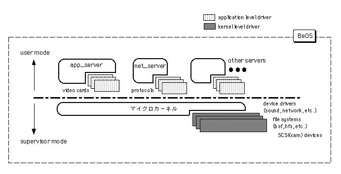<div>図[2.7]  カーネルレベルのドライバとアプリケーションレベルのドライバ</div>
</div>

<br/>

以下は、二種類のドライバそれぞれについての説明です。<br/>

<br/>

 ■カーネルレベルのドライバ<br/>

  マイクロカーネルとリンクするデバイスドライバのうち、代表的なものが拡張カードのドライバです。特に、SCSIカード用のドライバはCAM(Common Access Method)に基づくカーネルとのインタフェースが公開されており、サードパーティ各社が提供できるようになっています。また、各種入出力ポートやキーボード及びマウスなど、より低位のハードウェア制御を行うデバイスドライバとのインタフェースも公開されています。これらのインタフェースを記述したインタフェースファイルは、/boot/develop/headers/be/driversフォルダに収録されています。<br/>

<br/>

  なお、ファイルシステムのドライバもカーネルレベルのドライバになっており、これについてもカーネルとのインタフェースが公開される予定です。現在はBeOS専用のファイルシステム(BeFS)とMacOS用のファイルシステム(HFS)がBeOSに付属していますが、それ以外のものも今後提供されていく予定です。1998年4月に公表されている予定では、1998年9月リリースのBeOS Release 4でDOS/Windows95用のFATのサポートを追加、そして1999年第一四半期リリースのBeOS Release 5でWindowsNT用のNTFSサポートが追加されます。<br/>

<br/>

  サーバモジュールとリンクするアプリケーションレベルのものとは違い、カーネルレベルのドライバはカーネルの一部としてカーネルと同じ特権モードで動作するため、作成(プログラミング)にあたっては十分な注意を払う必要があります。そのうちで最も重要な制限としては、カーネルが公開している手続きを除き、2.6で紹介するAPIは一切利用できないことがあります。このような、カーネルレベルのドライバに対する制限はUnix系OSやWindowsNTの場合と大体同じです。ですから、既にこれらのOS用のデバイスドライバを開発した経験をお持ちの方であれば、BeOS用のデバイスドライバを開発するのもそれほど難しくはないと思われます。<br/>

<br/>

 ■アプリケーションレベルのドライバ<br/>

  サーバモジュールとリンクするドライバのうち、代表的なのはプリンタドライバでしょう。プリンタドライバは、2.3節で説明したprint_serverから呼び出され、アプリケーションが印刷を要求したデータ(テキストや画像など)をプリンタに渡して印刷してもらうための制御処理を行います。<br/>

<br/>

  カーネルレベルのドライバとは違い、アプリケーションレベルのドライバは通常のアプリケーションを作るのとそれほど変わらないやり方で開発できます。違うのは、main()ルーチンを作らず、サーバモジュールから呼び出される手続きを実装した共有ライブラリを作成するという点だけです。もちろん、システムが提供しているAPIを利用することが可能です。<br/>

<br/>

  アプリケーションレベルのドライバの中で、少し変わっているのがビデオカード用のドライバです。このドライバはapp_serverから呼び出されるのですが、カーネルレベルのドライバと同様、APIとして提供されている共有ライブラリを利用することができません。app_serverでは最も基本的なサービスを提供しているため、それとリンクして動くドライバの方で不用意なAPIを呼び出してしまうと、不具合が起きてしまいます。したがって、利用できるAPIについてはカーネルレベルのドライバと同じ制限が与えられているのです。また、2.5節で述べるGame Kitのために、アプリケーションからビデオカードのフレームバッファを直接アクセスするための仕掛けを実装しなければならないのも注意すべき点でしょう。<br/>

<br/>

  ビデオカード用のドライバ以外のもの、たとえば上に書いたプリンタドライバや、またnet_serverとリンクするプロトコルドライバなどは、通常のアプリケーションと同じようにAPIを呼び出して構いません。実際、PPP(Point to Point Protocol)のプロトコルドライバは、シリアルポートを制御するのにDriver Kitを利用しています。<br/>

<br/>

以上でBeOSのデバイスドライバに関する説明を終わります。なお、本書ではデバイスドライバのプログラミングは扱いません。デバイスドライバ開発の具体的な手順は、Be社が出している開発資料[3]をご覧下さい。<br/>

<br/>

<br/>
<a name="2.5"></a>
<h2>2.5&nbsp;&nbsp;三種類の実行形式</h2>
BeOSのアプリケーションを作るのに利用できるAPI(Application Programming Interface)を紹介する前に、もう一つだけOSの内部に関連することを説明しておきます。これは、アプリケーションのソースコードを書き、コンパイラで機械語に変換して実行ファイルを作ったあと、それがどのようにCPUに読み取られて動くのかということを理解するのに必要な知識です。<br/>

<br/>

<div id="imagebox">
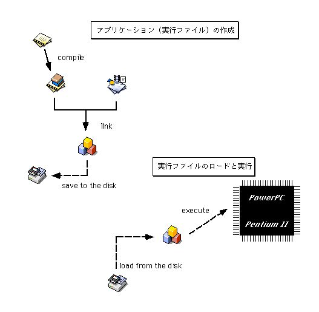<div>図[2.8] ソースファイルの作成</div>
</div>

    →アプリケーションのmake<br/>

     →実行ファイルをディスクからメモリへロード<br/>

      →CPUによる実行<br/>

    までの流れを図示)<br/>

<br/>

上の図は、アプリケーションの作成から実行までの一連の流れを示したものです。アプリケーションのソースコードをファイルに保存したら、これをコンパイラで機械語に変換し、オブジェクトファイルを作成します。そして、できたオブジェクトファイルがリンカによってライブラリやリソースファイルと結合され、アプリケーションの実行ファイルが作られるのです。実際の作成手順を第二部の初めで説明しますが、それほど複雑な作業ではありません。<br/>

<br/>

でき上がったアプリケーションの実行ファイルは、ソースファイルやオブジェクトファイルと同様、ハードディスクなどの二次記憶装置に保存されます。この実行ファイルは、OSによってメモリ上にロードされ、そしてロードしたファイルの中の機械語で書かれた命令、つまり実行コードを読み取ってその通りに処理を行うよう、OSがCPUに指示を出すのです。どんなアプリケーションでもこの流れは変わりません。それどころか、マシンを起動したとき、OS自身も同じように二次記憶装置からメモリにロードされて動作を開始するのです(注2-6)。<br/>

<br/>

さて、CPUが読み取り可能な実行コードを格納したファイルは、アプリケーションの実行ファイルだけではありません。たとえば、前の節で説明したデバイスドライバについて考えてみましょう。デバイスドライバは単独で実行されるものではなく、OS(マイクロカーネル)やサーバモジュールによってロードされ、必要な処理を行うために呼び出されるモジュールです。これらのモジュールは、「動的リンクライブラリ(DLL; Dynamic Linking Library)」や「共有ライブラリ(Shared Library)」と呼ばれ、アプリケーションが実行される時にリンクされます。そうではなく、アプリケーションの実行ファイルを作成する時にリンクされるモジュールは「静的ライブラリ(Static Libary)」と呼ばれます。動的リンクライブラリが共有ライブラリとも呼ばれるのは、異なるアプリケーション同士が、同じ動的リンクライブラリを利用することが可能だからです。下の図は、これらの違いを示したものです。<br/>

<br/>

<div id="imagebox">
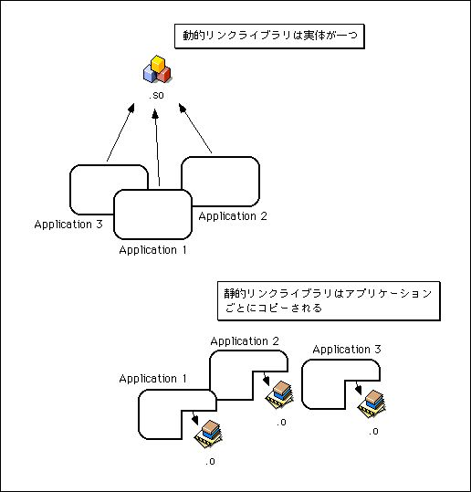<div>図[2.9] 静的リンクライブラリと動的リンクライブラリの呼び出され方を図示</div>
</div>

<br/>

<br/>

静的リンクライブラリと違い、動的リンクライブラリ、すなわち共有ライブラリを使うと、メモリやハードディスクの節約につながります。メモリを節約できるのは、仮想記憶を利用することにより、メモリ上には一つしかないライブラリの実体を各アプリケーションが自分自身のアドレス空間に配置して呼び出せるからなのですが、これには別の利点があります。つまり、一度ハードディスクからメモリにロードされれば、その共有ライブラリを利用する別のアプリケーションを起動したときに、既にライブラリがメモリ上に存在しているので余計なロードを行う必要がなく、それだけアプリケーションの起動時間が短縮されるのです。こうした理由から、最近のOSでは動的リンクライブラリを積極的に利用するのが普通になってきています。共有ライブラリを使う利点には、この他にもライブラリの更新(バージョンアップ)が簡単になるという事があります。<br/>

<br/>

ちょっと寄り道をしましたが、実行ファイルに話しを戻しましょう。同じように実行コードを格納していても、アプリケーションと動的リンクライブラリとでは実行のされ方が違います。一方は単独で実行され、もう一方は他のアプリケーションからモジュールとして呼び出されます。この実行のされ方のことを、ここでは「実行形式」と呼ぶことにします。どのような実行形式があるかというのはOSによって異なるのですが、BeOSの実行形式は以下の三種類です。<br/>

<br/>

 ■アプリケーション<br/>

  main()ルーチンから実行が始まる、最も一般的な実行形式です。実行ファイルのロードとmain()ルーチンの呼び出しは、ユーザや他のアプリケーションからの指示にしたがってシステム(OS)が行います。<br/>

<br/>

 ■共有ライブラリ<br/>

  アプリケーションが起動した時にリンクされ、モジュールとして呼び出されます。実行ファイルのロードとアプリケーションへのリンクはシステムが行いますが、ライブラリ手続きの呼び出しは、通常の手続き呼び出しと同じようにアプリケーション自身が行います。<br/>

<br/>

 ■add-on<br/>

  必要に応じて好きなタイミングでアプリケーションからロードされ、モジュールとして呼び出されます。実行ファイルのロード、およびアプリケーションへのリンクをアプリケーション自身が行います。ライブラリ手続きの呼び出しは、共有ライブラリの場合と同じくアプリケーションが行います。また、不要になった場合にアンロードすることも可能です。<br/>

<br/>

三つの実行形式のうち、共有ライブラリとadd-onはどちらも動的リンクライブラリですが、モジュールとしての自由度が違います。共有ライブラリは、あらかじめ何を呼び出すかというのがアプリケーションの作成時に決まっており、実行ファイルのロードもアプリケーションの起動時に行われます。これに対し、add-onは実行ファイルのロードとアプリケーション本体へのリンクを、アプリケーション自身が制御できますから、どんなadd-onを呼び出すかというのも好きに決められるのです。表2.1に、これらの違いをまとめてみました。<br/>

<br/>

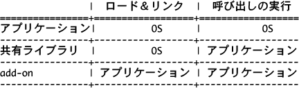<br/>

共有ライブラリとadd-onの違いを見るために、実際に動かしてためしてみましょう。最初は共有ライブラリからです。システム付属のデモアプリケーションが入っているフォルダを開いてください。起動ボリュームの中にあるdemosです。この中に収録されている"GL Teapot"というアプリケーションを動かしてみましょう。図2.10のように、回転する急須を3Dで表示するウィンドウが開かれるはずです。<br/>

<br/>

<div id="imagebox">
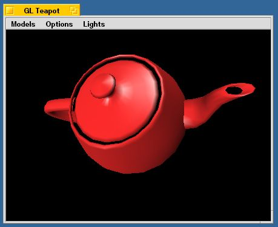<div>図[2.10] GL Teapotの画面キャプチャ</div>
</div>

<br/>

次に、ウィンドウを閉じてアプリケーションをいったん終了して下さい。そして、起動ボリュームの中にある beos/system/libというフォルダから、"libGL.so"というファイルを別の場所に移動します。<br/>

<br/>

注意!この実験で他の場所に移すのは、libGL.soだけにして下さい。それ以外のファイルの中には、場所を移してしまうとシステムを再起動できなくなるなど、取り返しのつかない障害を引き起こす重要なものがあるからです。本来は、起動ボリュームのbeos/systemの中にあるファイルやフォルダは移動や変更を行ってはいけないのですが、ここでは実験のために敢えて行ったのです。libGL.soを選んだのは、この共有ライブラリを外してしまってもシステムが完全に動かなくなるということがないからです。それでも、ここで試したようにアプリケーションを起動できなくなってしまう場合がありますから、十分注意して実験を行って下さい。<br/>

<br/>

それが済んだら、もう一度GL Teapotを起動してみて下さい。何が起こるでしょうか?図2.11のようなアラートパネルが表示され、アプリケーションを起動できないはずです。libGL.soというのはGL Teapotが使っている共有ライブラリで、別の場所に移してしまうとGL Teapotが起動しようとした時にリンクできなくなるため、エラーを起こしてしまうのです。libGL.soを元の場所に戻せば、再びGL Teapotを起動できるようになります。確認してみて下さい。<br/>

<br/>

<div id="imagebox">
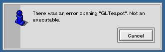<div>図[2.11] アラートパネルの画面キャプチャ</div>
</div>

<br/>

共有ライブラリの次はadd-onです。起動ボリュームの中にあるbeos/system/add-ons/Trackerというフォルダから、"FileType-F"というファイルを別の場所に移動します。それからBeOSを再起動してみて下さい。FileType-FはTrackerアプリケーションが使うadd-onですが、問題なくTrackerが起動し、デスクトップの画面が表示されるはずです。つまり、共有ライブラリの時とは違い、add-onが見つからなくてもアプリケーションを起動するのに問題は起きません。<br/>

<br/>

ただし、適当なフォルダを開き、開いたウィンドウの「File」メニューから「Add-Ons」を選択しても、表示されるadd-on項目の一覧の中にFileType-Fに相当するものは見当たらないはずです。場所を移してしまったので、Trackerアプリケーションが見つけられなくなってしまったのです。FileType-Fを元の場所に戻し、もう一度「Add-Ons」メニューを選択してみてください。今度は表示され、問題なくFileType-Fを呼び出せるはずです(注2-7)。<br/>

<br/>

共有ライブラリとadd-onの違いが分かったでしょうか?この二つの最大の違いは、アプリケーションから見た場合の自由度です。共有ライブラリは、OSによってアプリケーションの起動時にロードとリンクが行われます。これに対し、add-onはアプリケーション自身がロードとリンクを行うので、どれでも好きなadd-onを自由にリンクして使うことができるのです。たとえば、上の実験で使ったTrackerのadd-onを考えてみましょう。Trackerの「File」メニューから「Add-Ons」を選択すると、“FileType”の他に“MakeArchive”というadd-on項目が表示されるはずです。少なくとも、BeOSをインストールした直後は、この二つがTrackerのadd-onとして登録されています。<br/>

<br/>

FileTypeとMakeArchiveはどちらもTrackerのadd-onであり、共通したインタフェースを持つモジュールです。Trackerは、ウィンドウの中で選択されているファイルやフォルダの情報をadd-onに渡して処理を依頼します。そして、add-onの方では受け取ったファイルやフォルダに対して固有の処理を行うのです。つまり、FileTypeであればファイルやフォルダのMIMEタイプ情報を設定するウィンドウを開いてくれますし、MakeArchiveであれば、選択したファイルやフォルダのアーカイブ(.tarファイル)を作ってくれます。そして、どちらのモジュールを呼び出して使うのかはTrackerアプリケーションと、それを操作するユーザの自由なのです。共有ライブラリでは、このようなことはできません。図2.12に、共有ライブラリとadd-onの違いを示します。<br/>

<br/>

<div id="imagebox">
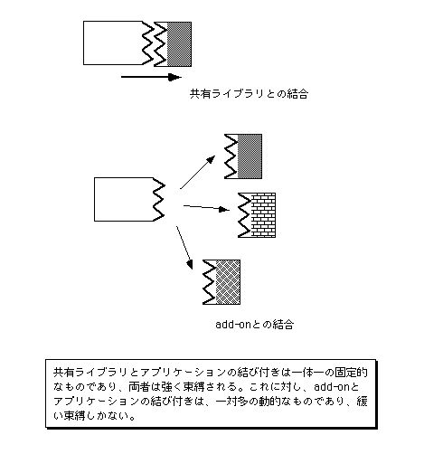<div>図[2.12]  共有ライブラリとadd-on</div>
</div>

<br/>

アプリケーションを作るときは、共有ライブラリとadd-onをうまく使い分けることが必要です。両者の違いや、またアプリケーションがどうやって動くのかを理解しておけば、実際にプログラムを書いたときに正しく動いてくれない場合でも、どうして動かないのかを考える役に立つはずです。OSの内部を知ることと、プログラムを書くということは決して無関係ではありません。次は、いよいよBeOSのAPIについての説明です。<br/>

<br/>

そうそう。add-onについてもう一つだけ書いておきます。BeOSでは、「レプリカント」といって、アプリケーションのビュー部品を他のアプリケーションのウィンドウにドラッグ&ドロップして貼り付けられるのは皆さんご存じだと思います。たとえば、システムに付属するアナログ時計のアプリケーション("Clock")から時計の部分をドラッグしてデスクトップにドロップすると、そのまま貼り付いて動き続けます(注2-8)。このレプリカントは、実はadd-onの仕組みを利用しているのです。どういうことかというと、レプリカントを受け取る方のアプリケーションでは、元のアプリケーションの実行ファイルをadd-onとしてロードし、受け取ったビュー部品だけを呼び出すのです。<br/>

<br/>

これについては、第二部でサンプルコードを使って具体的に説明しますが、add-onの強力さを示す良い例だといえます。勘のいい人であれば、add-onはWindowsのOLE/COM技術や、またJavaのJavaBeans技術に相当するものであることに気付いたかも知れませんね。では、APIの説明に進みましょう!<br/>

<br/>

<span id="annotate"><dl><dt>(注)2-6</dt><dd>これは、あらかじめマシンのROMなどに格納されている「ブートプログラム」と呼ばれる小さなプログラムによって行われます。つまり、マシンやCPUから見れば、アプリケーションとOSの間に違いはありません。</dd></dl></span>
<br/>

<span id="annotate"><dl><dt>(注)2-7</dt><dd>TrackerのAdd-Onメニュー項目にFileType-Fが表示される時、その名前は“FileType-F”ではなく“FileType”になります。これは、add-onのファイル名の最後がハイフン記号("-")と文字の組み合わせになっていた場合、自動的にそれがショートカットに使われるからなのです。実際、FileTypeはCmd+Opt+Fというショートカットキーで呼び出せすことができます。これは、Trackerのadd-onを利用する場合のtipsとして憶えておいてもよいでしょう。</dd></dl></span>
<br/>

<span id="annotate"><dl><dt>(注)2-8</dt><dd>レプリカントを利用する時は、DeskBarのBeメニューで“Show Replicants”を選択し、ドラッグ&ドロップ用のハンドルが表示されるようにしておいて下さい。</dd></dl></span>
<br/>

<br/>
<a name="2.6"></a>
<h2>2.6&nbsp;&nbsp;APIの概観</h2>
ここでは、BeOSのAPIについて大まかに説明します。APIというのはApplication Programming Interfaceの略号で、画面に描画したり、またファイルを開いたりといった様々な処理を行うために、システムから提供されているものです。APIをうまく利用すれば、本当に必要な処理だけをプログラミングするだけでアプリケーションを作れます。プログラムを書き始める前に、どのようなAPIがあるのかを理解しておくことは重要です。そうすれば、既にAPIとして提供されている機能を自分で作って余計な時間を過ごしてしまう心配もなくなるでしょう。<br/>

<br/>

BeOSでは、APIは"Kit"と呼ばれる集まりに分類されています。一つのKitには、互いに関連の深いクラスや手続きがまとめられおり、それぞれがフレームワークを構成しています。1998年4月の時点(BeOS Release 3)で提供されているKitには、以下のものがあります:<br/>

<br/>

 ・Application Kit<br/>

 ・Interface Kit<br/>

 ・Storage Kit<br/>

<br/>

 ・Support Kit<br/>

 ・Translation Kit<br/>

 ・Network Kit<br/>

 ・Mail Kit<br/>

 ・Kernel Kit<br/>

<br/>

 ・Game Kit<br/>

 ・Media Kit<br/>

<br/>

 (・Device Kit)<br/>

 (・Midi Kit)<br/>

<br/>

また、Kitとしてまとめられているもの以外に、次の二種類のAPIが提供されています。<br/>

<br/>

 ・OpenGL<br/>

 ・POSIX API<br/>

<br/>

このうちOpenGLは、3Dグラフィクス処理用の業界標準ライブラリ規格で、POSIX APIはUnix系OSで一般的なシステムコールの標準規格です。どちらも他のOSで利用できることが多いものですから、既にご存じの方もいらっしゃるでしょう。そのため本書では、これら二つのAPIについてはプログラミングの題材として特に取り上げません。<br/>

<br/>

以下に、上に挙げたそれぞれのAPIについて順に説明します。<br/>

<br/>

 ■Application Kit<br/>

  アプリケーションを作るうえで中心的な役割をはたすものです。提供されているクラスの数こそ、現在は11個と多くありませんが、このKitを知らないことにはBeOSのアプリケーションを作ることはできません。<br/>

<br/>

  アプリケーションの雛型を定義したBApplicationクラスや、スレッドまたはアプリケーション間のメッセージ通信に使うBMessageとBMessengerクラス、またクリップボード機能を提供するBClipboardクラスなどがあります。それから、MacOSのAppleScriptのように、スクリプトを使ってアプリケーションを制御できるようにするための仕組も、このKitで提供されています(BHandlerクラスとBPropertyInfoクラス)。<br/>

<br/>

 ■Interface Kit<br/>

  ウィンドウやボタンなど、ユーザインタフェース部品を集めたものです。提供されているクラスの数が37個と、最も豊富なクラスを誇るKitです。<br/>

<br/>

  この中で最も重要なのは、ウィンドウの雛型を定義したBWindowクラス、それから描画エンジンとのインタフェースを提供するBViewクラスです。ウィンドウに何かを表示するために描画処理を行うには、BViewクラスのインスタンスを生成してウィンドウ(BWindowオブジェクト)に貼りつける必要があります。<br/>

<br/>

 ■Storage Kit<br/>

  ファイルやディレクトリなど、ファイルシステム要素に関するAPIを集めたものです。全部で17個のクラスがあり、一般的な階層構造を持つファイルシステムにアクセスするのに十分な機能が提供されています。さらに、BeOSのファイルシステム(BeFS)が持つ、ファイルシステム要素に対する任意の属性付けと、それをキーとした検索処理を行うのに便利な機能も提供します。<br/>

<br/>

  このKitで注目すべきクラスは、BNodeとBQueryです。BNodeは、ファイルやディレクトリなどファイルシステムの階層木でノードにあたるものを表現したクラスです。そして、BQueryクラスは検索用の問い合わせ文の作成、および検索実行機能を持っています。ファイルシステム要素に対する属性設定にはBNodeクラスを使い、属性をキーとする検索処理にはBQueryクラスを利用します。これらのAPIについては、第9章でサンプルアプリケーションを使った説明を行います。<br/>

<br/>

Application KitとInterface Kit、それにStorage Kitを理解すれば、テキストエディタのような一般的なアプリケーションを作るには十分です。まずはこの三つのKitから使い始め、それから順番に他のKitに手を出してみるのがよいでしょう。<br/>

<br/>

 ■Support Kit<br/>

  その他のKitには分類されない、ユーティリティをまとめたものです。APIの呼び出しに対するエラーコードを定義したヘッダファイルも、このKitに含められています。また、2.3節のdebug_serverの説明で紹介した、低レベルデバッガを起動するためのデバッグ用マクロも提供されています。<br/>

<br/>

  この他、汎用のリストクラス(BList)やデータの入出力処理クラス(BDataIO)、また平行処理で必要な排他制御に便利なクラス(BLocker)などが提供されており、他のKitにあるクラスからも利用されています。たとえば、Storage KitのBFileクラスはファイルアクセス機能を持ちますが、このクラスはBDataIOクラスを継承しています。また、BListクラスは他のKitの様々なクラスが利用しています。さらに、オブジェクトのアーカイビングやフラット化(注2-9)を扱うためのクラス(BArchivable, BFlattenable)もこのKitで提供されており、Application KitやInterface Kitで利用されています。<br/>

<br/>

  また、他のOSとの間で日本語のテキストデータをやり取りするのが簡単になるように、BeOSが文字コードとして使っているUTF-8/Unicodeと、MacOSやWindowsで使われているShift JIS、それからUnix系のOSで一般的なEUCとの間のコード変換手続きも提供されているのが目を引きます。<br/>

<br/>

図2.13に、Application KitとInterface KitおよびStorage Kit、それからSupport Kitとアプリケーションの関係を描いてみました。アプリケーションが利用する中心的なAPIがApplication Kitであり、これを一部利用した形で、ユーザインタフェース機能を提供するInterface Kitと、それからファイルシステム機能を提供するStorage Kitが実装されています。これらに対する基本的なユーティリティがSupport Kitであり、それ以外のAPIや、またアプリケーションから利用されます。<br/>

<br/>

<div id="imagebox">
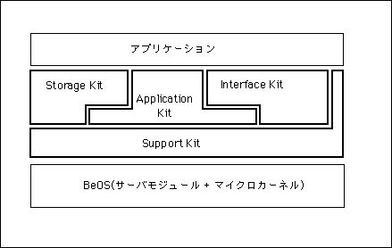<div>図[2.13] Application Kit～Support Kit、およびアプリケーションと</div>
</div>

     BeOSを含めた階層図)<br/>

<br/>

各Kitは、アプリケーションからの要求に従ってサーバモジュールやマイクロカーネルを呼び出し、必要な処理の実行を依頼します。つまり、アプリケーションから直接サーバモジュールやマイクロカーネルを呼び出すのではなく、Kitを経由して呼び出しを行います。この方式の最大の利点は、呼び出しの詳細をKitが隠してくれるため、それだけアプリケーションを開発するのが楽になるということです。<br/>

<br/>

 ■Translation Kit<br/>

  画像やテキスト、またサウンドやビデオなど、様々な種類のデータに対してフォーマット変換を行うためのAPIです。データの種類によらず、一貫した手順で処理できるのが特徴です。実際の変換処理を行うモジュールはadd-onとして提供され、API側ではフォーマット変換処理の枠組みだけを提供しています。Apple社のQuickTime APIに詳しい方であれば、“Graphics Importer Components”の仕組を画像以外の任意のデータに対しても適用できるように拡張したものだと考えて下さい。<br/>

<br/>

  BeOS Release 3では、システム標準のadd-onとして三つの画像フォーマットを扱うモジュールが提供されています。三つというのはBMPとTGA、そしてTIFFです。add-onに対するインタフェースもTranslation Kitで規定されていますので、add-onを自作することが可能です。実は、Translation KitはシステムのAPIとして提供されるようになる前は、“DATATypes lib”というフリーのライブラリとして配布されていました。このため、Be社がシステム標準で提供しているもの以外に多くの変換モジュール(add-on)が開発され、流通しています。<br/>

<br/>

  なお、Translation Kitの利用は、単にフォーマット変換を行うだけにとどまりません。Translation Kitのadd-onが処理するデータは、Support Kitで提供されている汎用のデータストリームクラス(BDataIO)のインスタンスとして渡されます。Storage Kitが提供しているファイルアクセスクラス(BFile)はBDataIOのサブクラスですから、当然ファイルを処理する場合に利用できますし、またファイル以外のものを扱うことが可能です。たとえば、ネットワークからファイルをダウンロードしながら、パイプライン的に変換処理することも可能です。さらに、出力ストリーム側で工夫することによって、ムービーファイルの再生を可能にしたadd-on(“QTHandler”)も作られています。<br/>

<br/>

 ■Network Kit<br/>

  ネットワークアクセスのためのAPIです。Unix系OSで一般的なBSDソケット準拠のAPIで、全てC言語で記述されています。なお、BSDソケットに準拠とはいえ、完全に互換なものではありません。実装されていない機能もありますし、また一部仕様が異なるものもあります。BSD版との主な違いはBe社のAPIリファレンスに記載されていますので、Unix系OS用に書かれたネットワークアプリケーションを移植する場合は、まずそちらを参照して互換性を確認するのがよいでしょう。<br/>

<br/>

  Network Kitでは、ネットワーアプリケーション用のソケットAPIに加え、2.3節で述べたnet_serverに対するadd-on、すなわちプロトコルドライバのインタフェースも提供しています。現在BeOSがサポートしているプロトコルはTCP/IPとAppleTalk、そしてPPPだけですが、これ以外のプロトコルを開発する場合には、Network Kitを利用します。<br/>

<br/>

 ■Mail Kit<br/>

  2.3節で紹介したmail_daemonを利用して、インターネットメールの送受信を行うためのAPIです。SMTPによるメールの送信、およびPOPによるメールの受信処理をmail_daemonが代行してくれるため、アプリケーションが行う処理は非常に簡単なもので済んでしまいます。また、メールの添付書類を扱う場合に必要な変換処理(base-64方式の符号化および複合化)機能も提供されており、単純なメールアプリケーションであれば簡単に作れてしまいます。<br/>

<br/>

 ■Kernel Kit<br/>

  スレッドの生成および破棄など、マイクロカーネルが提供する比較的低レベルの機能を呼び出すためのAPIです。このKitはC++ではなく、C言語で記述されています。<br/>

<br/>

  Application Kitが提供しているBLooperクラスやBMessengerクラスを使うと、スレッドの操作やスレッド間通信の詳細に立ち入ることなくプログラミングできますが、よりきめ細かい処理を行う必要がある場合には、このKitが役に立つでしょう。スレッドに関連するAPIの他、アプリケーション間で特定のメモリ領域を共有するためのAPIや、add-onの呼び出しなどを行うAPIが提供されています。<br/>

<br/>

 ■Game Kit<br/>

  ゲームアプリケーションを始め、高度なグラフィクス処理を行うアプリケーションの開発に便利な機能を提供するAPIです。アプリケーションからビデオカードのドライバを直接呼び出すためのクラスに加え、マウスカーソルの位置をアプリケーションから制御するための関数が提供されています。<br/>

<br/>

  ビデオカードのドライバを直接呼び出す機能を持ったクラスとして、BWindowScreenとBDirectWindowの二つが用意されています。これらのクラスは、ビデオカードのドライバと連携し、app_serverを経由することなく、アプリケーションが直接ビデオカードのフレームバッファ(VRAM)にアクセスできるようにしてくれます。これを利用すると、それだけ高速な描画処理が可能になります。さらに、描画内容をメインメモリからフレームバッファに転送する際、ビデオカードのDMAコントローラを利用すれば、CPUの負荷を大幅に減らすことができるのです(注2-10)。<br/>

<br/>

  なお、BWindowScreenクラスは全画面モードでの表示機能しか持ちませんが、BDirectWindowクラスの方は全画面モードとマルチウィンドウモードの両方に使えます。ただし、BDirectWindowクラスさえあればBWindowScreenクラスは不要というわけではなく、BWindowScreenクラスには使い方が簡単だという利点があります。状況に応じて、適した方を使い分けるというのがよいでしょう。<br/>

<br/>

 ■Media Kit<br/>

  ビデオやサウンドなど、ストリーム型のデータをリアルタイムで処理するためのAPIです。Apple社のQuickTimeのように、複数のデータストリームを関連づけて一まとめに扱ったり、またそれらの間で同期をとるのに便利な機能が提供されています。<br/>

<br/>

  なお、1998年4月の時点のBeOS(Release 3)では、サウンドデータを扱う機能しか提供されていませんが、1998年9月にリリース予定のバージョン(Release 4)で全面的な変更が加えられる予定です。本書の執筆時点では改変後の仕様が明らかでないため、Media Kitについてはこれ以上触れません。<br/>

<br/>

 ■Device Kit<br/>

  入出力ポートの制御用です。現在、BeOSがサポートするすべての機種で利用可能なのはシリアルポート用のBSerialPortクラスだけですが、今後その他のポートやデバイスもサポートするよう拡張されるものと思われます。ただし、1998年4月の時点のBeOS(Release 3)では、Device Kitの記述がAPIリファレンスから抜け落ちており、以後のバージョンでは他のKitへ統廃合される可能性もあります。<br/>

<br/>

 ■Midi Kit<br/>

  MIDIデータを処理するためのAPIです。MIDIファイルや音源に対する入出力を柔軟に処理できるようになっており、MIDIデータを加工するモジュール同士をネットワーク状に接続して様々なフィルタ処理を行わせる、といったことが可能です。ただし、1998年4月の時点のBeOS(Release 3)では、Midi Kitの記述がAPIリファレンスから抜け落ちており、以後のバージョンでは他のKitへ統廃合される可能性もあります。<br/>

<br/>

  上で述べたMedia KitやMidi Kitを使うと、あらかじめ指定したタイミングに従って音声付き動画(ムービー)やMIDIファイルを再生することが可能ですが、こうした処理は、BeOSがリアルタイムOSとして十分な機能を備えているからこそ簡単に実現できるのです。どちらのKitも、マイクロカーネル(Kernel Kit)が提供するマルチスレッド機能を積極的に利用し、重要なスレッドを高い優先度で動作させて不要なスレッドがCPUを占有してしまうことがないようにしたり、また適切なタイミングで必要なスレッドが実行開始されるようにしています。<br/>

<br/>

 ■OpenGL<br/>

  Silicon Graphics社によって開発された、3Dグラフィクス処理用のライブラリ規格です。本来が3Dグラフィクス用のハードウェアに対する標準インタフェースとして開発されたものであるため、3D画像の描画を行うサブルーチン(C言語の関数)の集合体となっています。つまり、3Dで表現された物体の動きをプログラミングしたり、またユーザ入力を扱うような機能は提供されていません。<br/>

<br/>

  OpenGLとBeOSのウィンドウシステム(Interface Kit)との橋渡しをするものとして、Be社から二つのクラスが提供されています。通常のウィンドウの中でOpenGLによる描画処理を行うためのBGLViewクラスと、全画面モードでの描画を行うBGLScreenです。なお、1998年4月時点のBeOS(BeOS Release 3)では、3Dグラフィクスカードによるアクセラレーション(高速化処理)をサポートしておらず、ソフトウェアのみで実装されています。3Dグラフィクスカードによるアクセラレーションは、1999年第一四半期リリース予定のBeOS Release 5で実現される予定です。<br/>

<br/>

  なお、Be社では、3D技術として業界標準のOpenGLに加え、プログラミングの簡単さと動作の軽快さをうたった独自仕様の“3d Kit”の提供を予告していました。1997年の秋にはα版が公開され、Release 3で正式導入されるのではという期待もあったのですが、全体的な開発リソースの不足から、当面の間その開発を見合わせることになっています。<br/>

<br/>

 ■POSIX API<br/>

  ファイル操作やプロセスの生成など、Unix系OSで一般的なシステムコールを規格化したもの(IEEE Standard 1003.1)です。現在BeOSで実装されているものは、この規格を全て網羅したものではなく、あくまでも準拠のレベルに留まっています。また、BeOS固有のAPIの呼び出しとPOSIX APIの呼び出しを一つのアプリケーションの中で混在させたときの動作は保障されない場合がありますので、Unix系OSからの(GUIを持たない)アプリケーションの移植を容易にするためのものとして考える方が無難でしょう。<br/>

<br/>

以上でBeOSのAPIに対する概要説明を終わります。第二部から始まるプログラミングの解説では、サンプルアプリケーションで使っているAPIについて、実際のコードを示して具体的に説明します。とはいえ、すべてのAPIを詳細に説明することはしませんので、できればBe社から出ているAPIリファレンス[2]を併せてお読みになることをお勧めします。<br/>

<br/>

また、本書の記述は、1998年4月の時点のBeOS(Release 3)に基づいています。それ以降のバージョンでは各Kitに対する機能追加が行われていくと予想されますので、実際にアプリケーションを開発する場合は、できる限り最新のAPIリファレンスを参照するようにして下さい。<br/>

<br/>

<span id="annotate"><dl><dt>(注)2-9</dt><dd>オブジェクトの「アーカイビング(archiving)」とは、オブジェクトの状態、つまりデータメンバの値を構造化データとして保存し、後で復元できるようにすることです。また、「フラット化(flattening)」というのは、構造化データをバイト列に変換し、異なるプラットフォーム間で持ち運びできるようにすることです。この後の第3章(3.5節)では、Application KitのBMessageクラスを利用したアーカイビングとフラット化について説明します。</dd></dl></span>
<br/>

<span id="annotate"><dl><dt>(注)2-10</dt><dd>BDirectWindowクラスが十分な性能を発揮するためには、ビデオカードがDMA転送機能とハードウェアカーソル機能をサポートしていることが必要です。なお、アプリケーションがグラフィクスハードウェア機能に直接アクセスできるようにするという点で、BDirectWindowはWindowsの“DirectDraw”[5]に相当するものだといえます。両者を比べた場合、BDirectWindowの方がよりシンプルで理解しやすいという印象を受けます。</dd></dl></span>
<br/>

<strong>参考文献</strong><br/>
[1]「Developing Your Own 32-Bit Operating System」Richard A. Burgess, Sams Publishing, 1995<br/>

  ISBN 0-672-30655-7<br/>

[2]「Be Developer's Guide」The Be Developement Team, O'Reilly & Associates, Inc. 1997<br/>

  ISBN 1-56592-287-5<br/>

[3]「Be Advanced Topics」The Be Development Team, O'Reilly & Associates, Inc.<br/>

  ISBN ※不明<br/>

[4]「OSの基礎と応用」A. S. タネンバウム著/引地信之, 引地美恵子訳, (株)トッパン, 1995<br/>

  ISBN 4-8101-8543-5<br/>

[5]「Graphics Programming with Direct3D」Rob Glidden, Addison-Wesley, 1997<br/>

  ISBN 0-201-56173-5<br/>


<hr>
<address>
Art of BeOS Programming<br/>
koga@stprec.co.jp
</address>


</div><!-- End of main -->

</div><!-- End of pagewidth -->

</body>

</html>

